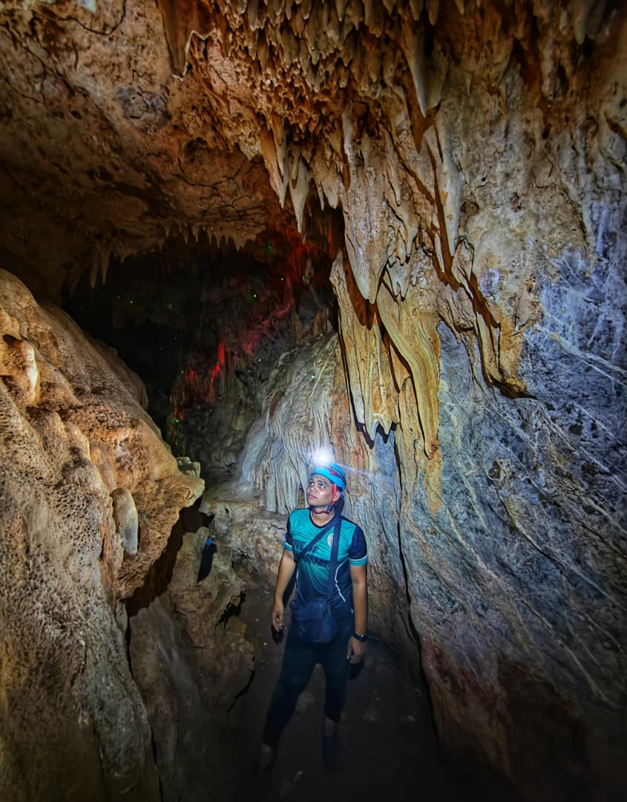

Tentang Malim Gunung
Seorang malim gunung berpengalaman yang telah lama berkhidmat di Gua Kelam, Perlis. Dengan kepakaran dalam laluan gua, keselamatan dan sejarah kawasan, beliau memainkan peranan penting dalam memastikan setiap lawatan pengunjung berjalan dengan selamat, teratur dan bermakna.
Lebih 7 tahun pengalaman di lapangan menjadikan beliau antara individu penting dalam aktiviti eksplorasi gua serta bimbingan pelancong dari dalam dan luar negara.
Biodata Malim Gunung
Nama: Muhammad Nur Azim Bin Samsudin
Asal: Jasin, Melaka
Jawatan: Malim Gunung / Jurupandu Eko Pelancongan Negeri Perlis
Pengalaman: 7 tahun
Minat beliau terhadap alam semula jadi menjadikan setiap tugasan satu peluang untuk mendalami dunia hutan, flora dan fauna.
Tugas Harian
Mengiringi pengunjung, mengurus tempahan, memberi taklimat keselamatan dan menyediakan kelengkapan sebelum masuk gua.
Pengalaman Menarik
Meneroka gua kristal dan terlibat dalam penemuan lebih 83 gua di Perlis sepanjang eksplorasi.
Pelancong Antarabangsa
Berpengalaman mengendalikan pelancong dari Canada, China, USA, Perancis, Indonesia, Thailand dan Australia.
Cabaran Kerjaya
Eksplorasi gua baharu yang berisiko tinggi termasuk laluan sempit dan kawasan tinggi mencabar.
Kemahiran
Komunikasi, keselamatan hutan, ikatan tali, survival training dan kursus penyelamatan.
Minat Kerja
Meneroka gua baharu kerana setiap lokasi memberi pengalaman dan cabaran berbeza.